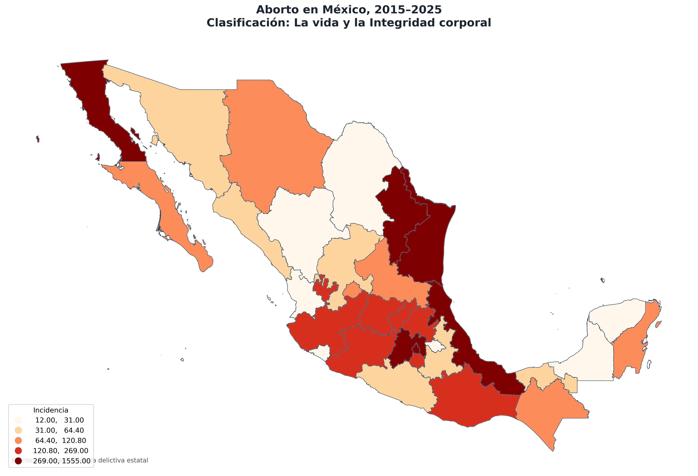
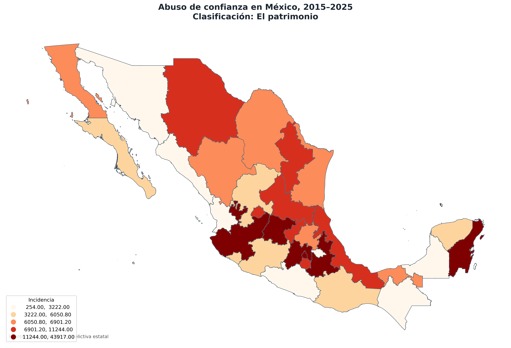
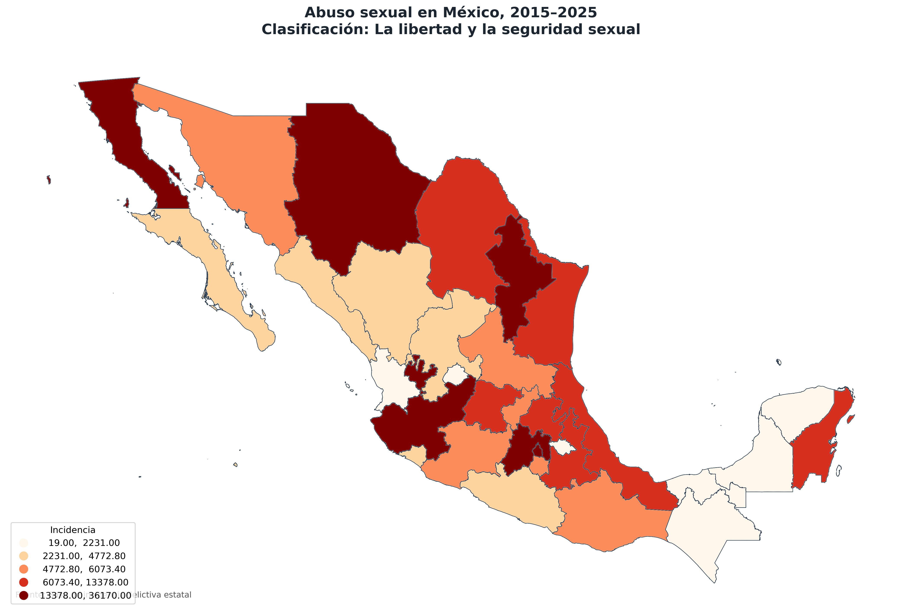
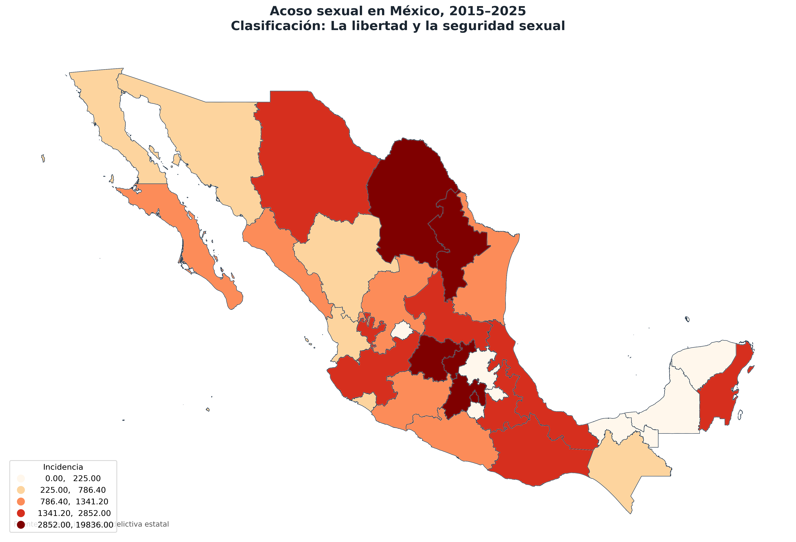
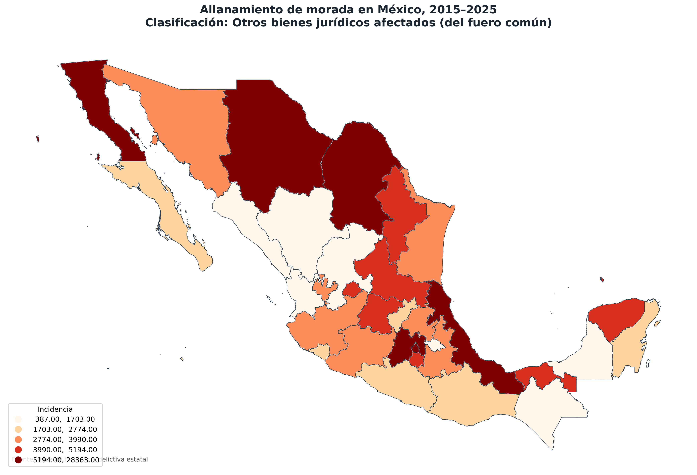
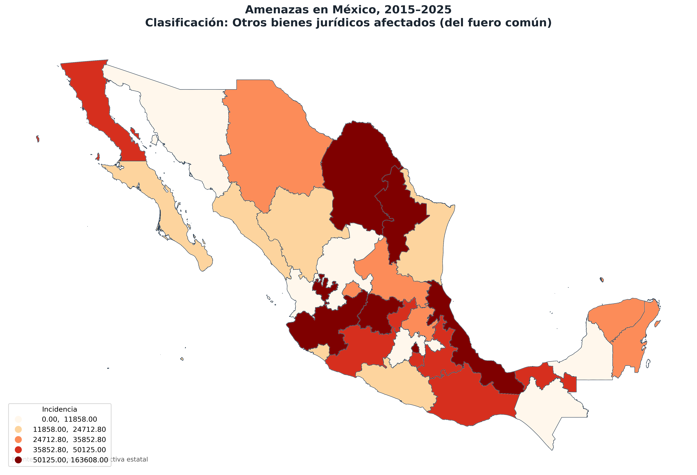
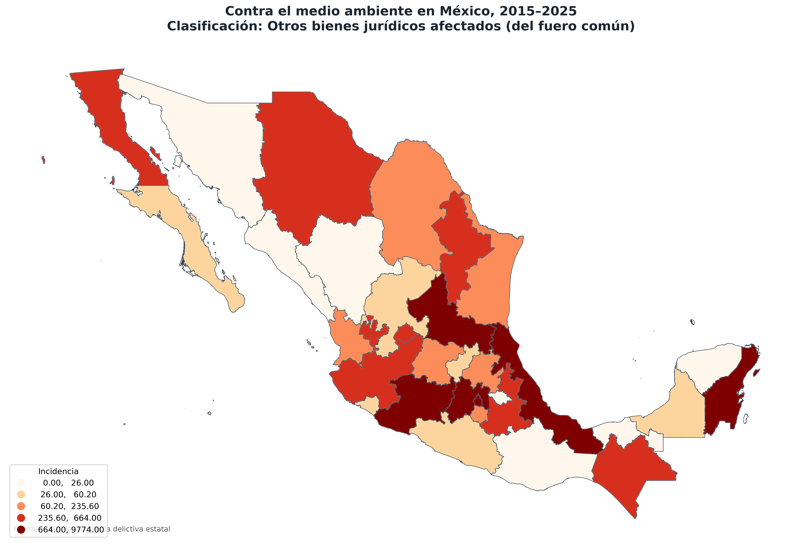
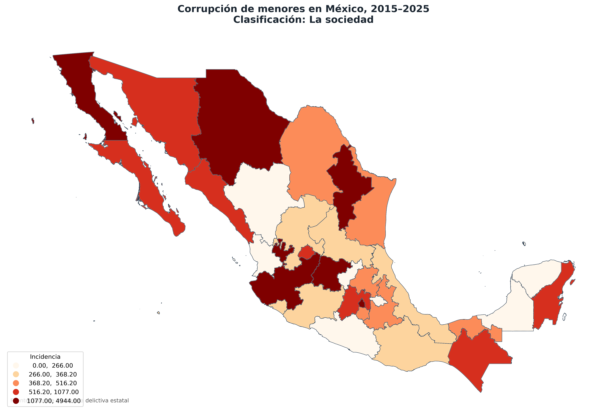
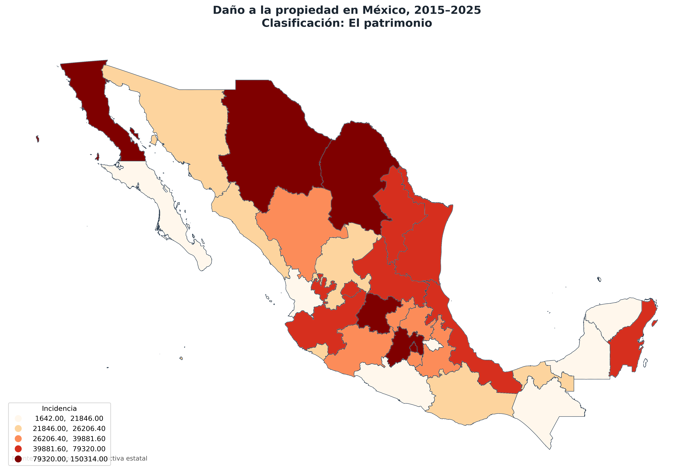

Análisis espacial por tipo de delito y entidad federativa
Este atlas muestra la distribución espacial de distintos tipos de delitos registrados en México durante el periodo 2015–2025. Los mapas permiten identificar las entidades federativas con mayor incidencia acumulada para cada delito.
La información se organiza mediante mapas temáticos por entidad federativa, con el propósito de apoyar la interpretación visual de los patrones territoriales de la incidencia delictiva.









Los mapas muestran que la incidencia delictiva no se distribuye de manera uniforme en el país. Algunos delitos presentan mayor concentración en entidades con alta densidad poblacional, actividad económica o dinámica urbana. La representación cartográfica permite identificar patrones territoriales que no siempre son evidentes en una tabla de datos.